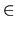

| Roman Numerals |
The original system of writing numbers used by the early Romans was simple but cumbersome. Various letters were used to represent important numbers, and these were then strung together to represent other numbers with the values decreasing monotonically from left to right. The letters they used and the numbers that were represented are given in the following table.
| I | 1 | V | 5 | |
| X | 10 | L | 50 | |
| C | 100 | D | 500 | |
| M | 1000 |
Thus 1993 was written as MDCCCCLXXXXIII. This system was then superseded by a partially place-oriented system, whereby if the above rule of decreasing values was broken, it meant that the immediately preceding (lower) value was deemed to be `negative' and was subtracted from the higher (out of place) value. In this system 1993 was usually written as MCMXCIII. There is still some controversy as to which letters could precede which other letters, but for the purposes of this problem we will assume the following restrictions:
Thus we could write MXMIII for 1993 or CCXCIV for 294, however we could not write ILV for 54, nor could we write LIL for 99. Note that 299 could be written as CCXCIX or CCIC
Given a Roman sum, we can either interpret it as such or as an
encoding of an Arabic sum. Thus V+V=X could be interpreted as an
ambiguous encoding of an Arabic sum with V 
{1, 2, 3, 4}
and X = 2 * V. Similarly, X+X=XX could be interpreted as a correct
Roman sum but an impossible Arabic encoding (apart from the trivial
encoding X = 0) and XX+XX=MXC as an incorrect Roman sum, but a valid
encoding with M = 1, X = 9, and C = 8.
Write a program that will read in sums in Roman numerals and determine
whether or not they are correct as Roman sums and also whether they
are impossible, ambiguous or valid as Arabic encodings. Assume that
zero will never appear on its own or as a leading digit, and that no
two Roman numerals map onto the same Arabic digit.
V+V=X X+X=XX XX+XX=MXC #
Correct ambiguous Correct impossible Incorrect valid